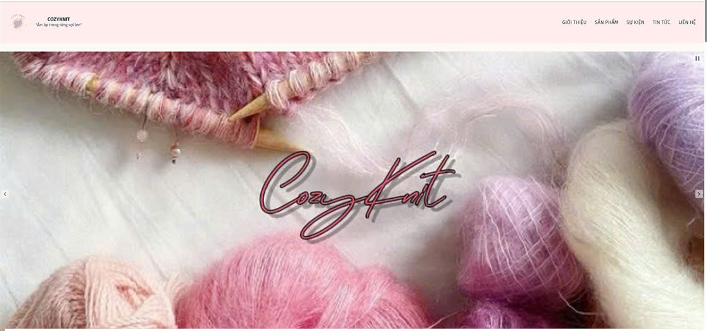

Tổng quan dự án
Cozy Knit là thương hiệu len đan thủ công với slogan "Ấm áp trong từng sợi len". Tôi phụ trách xây dựng và quản trị toàn bộ website bằng WordPress, đảm bảo giao diện mượt mà và tốc độ tải trang được tối ưu cho trải nghiệm mua sắm của khách hàng.
Công việc thực hiện
- Xây dựng và quản trị website bằng WordPress
- Tối ưu tốc độ tải trang
Kết quả đạt được
Kết quả: Website hoạt động ổn định, tốc độ tải trang được tối ưu.